Heroes
No entries match these filters.
Base stats at rank C. Per-rank gains are on the Classes page. Price in shards. Column meanings: stat & notation key.
Irini Hero_1
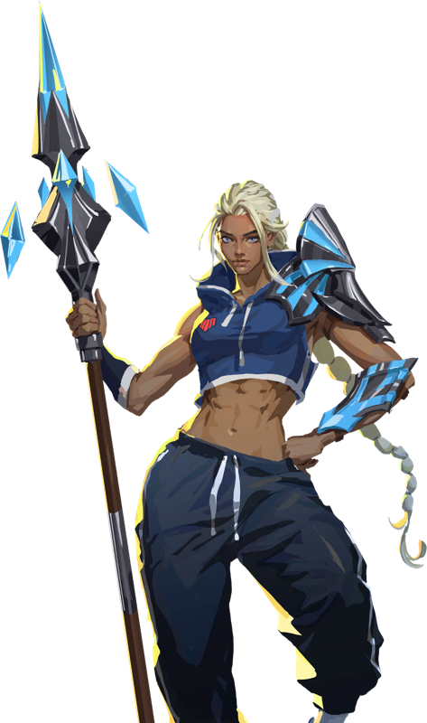
Second Wind — “They said I'd never do this again.”
HP 650 · Def 29 · Base Atk Dmg 31 · Attack 0 · Magic 0 · Atk Speed 20 (base 0.54/s) · Crit 15 · Range 3 · Mana 10/75 +4 · Move 1.5 · Ranged (proj. speed 5)
Guild: Frontline · Class: Duelist · Tags: Stall · Gender: Feminine · Mana lock 0.75s
Abilities & specialization paths
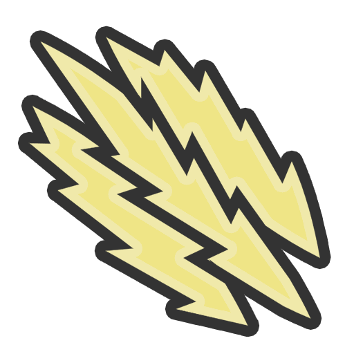
Limitless
Each auto attack, gain 1 Attack Speed.
After Stall (15), auto attacks deal 0 + 100% AttackSpeed bonus damage.
The Electric
Call down lightning, dealing 10 + 20% AttackSpeed + 10% Attack + 10% Magic damage per Stall and Rush triggered this game.
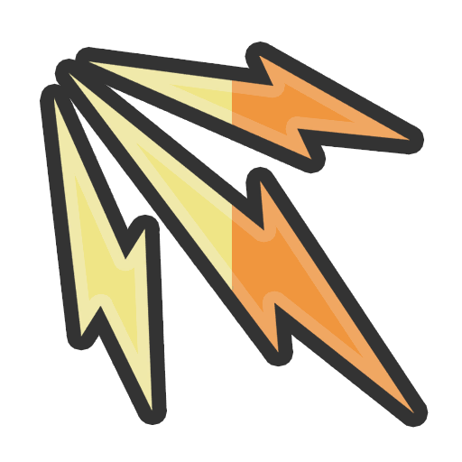
The Mighty
After Stall (10), whenever a Duelist auto attacks it gains 0 + 1% Rank Attack Speed and 0 + 1% Rank Attack. Backup.
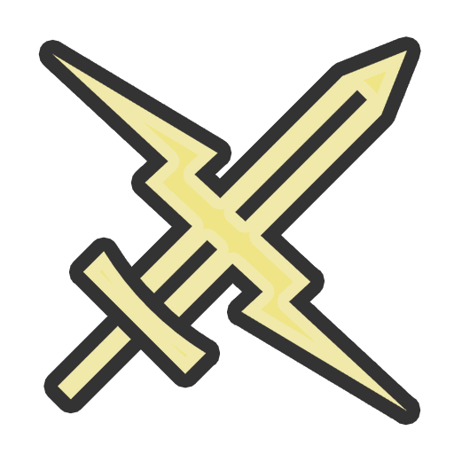
The Olympic
Gain the unique quest item Zeus's Thunder.
Current guild: A champion athlete, until a shoulder injury ended her career. Her powers awakened soon after, healing her - but making her too strong to fairly compete against ordinary people. Frontline signed her soon after. The performance guild built an entire marketing campaign around her: a champion everyone wrote off, coming back stronger than ever. In the rifts she's known for her ambition and explosive power.
Motivation: A new guild is a clean track: real stakes, a team that needs her to perform rather than pose.
In pools: AllHeroes, Duelists, Duelists and Warriors
Hoyoung Hero_2
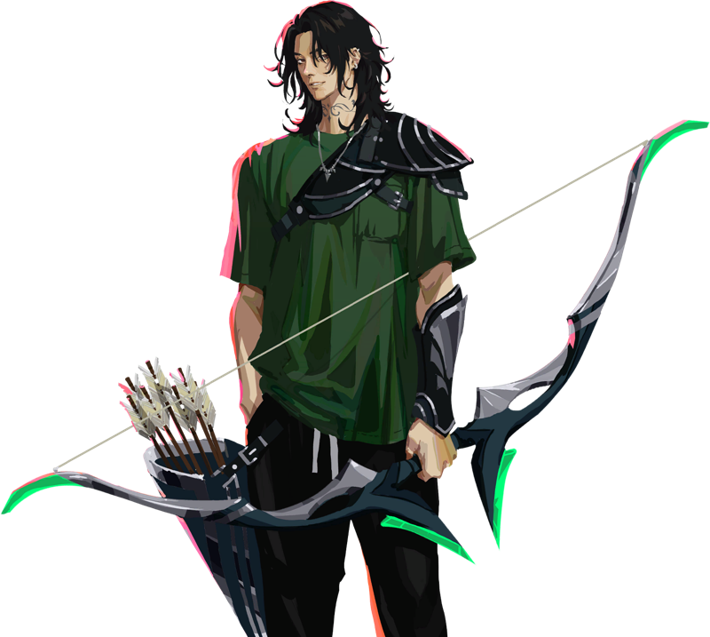
The Newcomer — “Everything is lining up.”
HP 675 · Def 30 · Base Atk Dmg 37 · Attack 0 · Magic 0 · Atk Speed 0 (base 0.47/s) · Crit 50 · Range 5 · Mana 40/75 +4 · Move 1.5 · Ranged (proj. speed 6)
Guild: The Hunt · Class: Assassin · Tags: Crit · Gender: Masculine · Mana lock 0.5s
Abilities & specialization paths
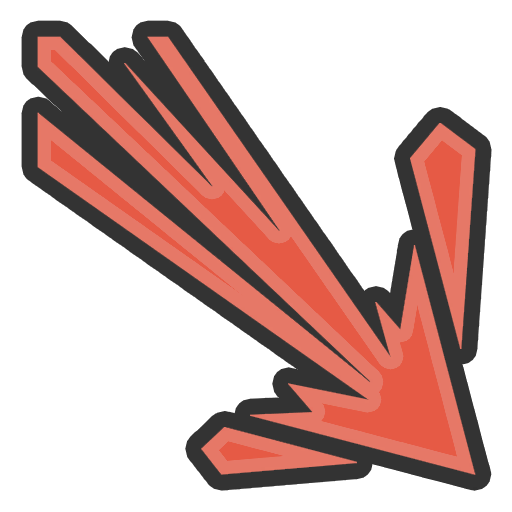
Killshot
Fire an arrow at the farthest enemy. It deals 250 + 300% Attack + 300% Magic damage and gains 0 + 100% Crit + 50% Rank additional Crit.
The Conduit
Gain the Mystic class and 6 Mana Regen.
On kill, permanently gain 3 Mana Regen and Stealth for 4 seconds.
At start of combat, other Assassins and Mystics gain all Mana Regen gained from this ability. Backup.
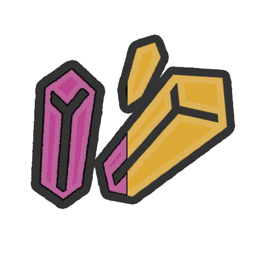
The Hunter
Killshot gains 50 + 50% Rank Crit the first 1 + 1% Rank times it is cast each combat.
On kill, gain 1 Shard for each hex from the enemy.
The Sniper
Gain the Warrior class, 50 Attack, 40 Max Mana, and 5 Attack Range.
Always choose to target the furthest enemy.
Auto attacks gain 10 + 10% Rank Attack and 3 + 3% Rank Crit for each hex from the enemy.
Current guild: Even by a marksman's standard he's reliable to a degree that's rare, and no one can trace where he learned it: no paper trail, no prior guild, no training on record. He keeps to himself, says only what needs saying, and the shot lines up every time. He's covering a younger brother's tuition; once it's paid, he may leave the way he arrived.
Motivation: A smaller guild means less time waiting at the back of a big raid and more contracts he can actually close. More contracts, more rank, more money. The math isn't complicated.
In pools: AllHeroes, Assassins, Assassins and Mages
Reyna Hero_3
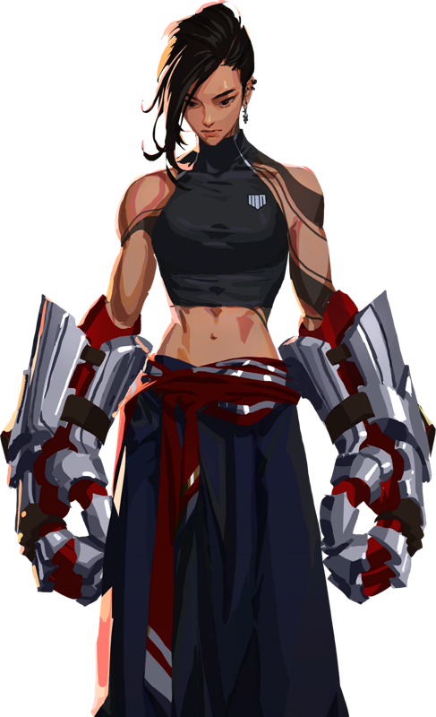
The Contender — “If I'm in, we train hard. Let's get to work.”
HP 850 · Def 39 · Base Atk Dmg 43 · Attack 25 · Magic 0 · Atk Speed 0 (base 0.44/s) · Crit 15 · Range 1 · Mana 35/70 +4 · Move 1.5 · Melee
Guild: Frontline · Class: Warrior · Tags: Shields · Gender: Feminine · Mana lock 1s
Abilities & specialization paths
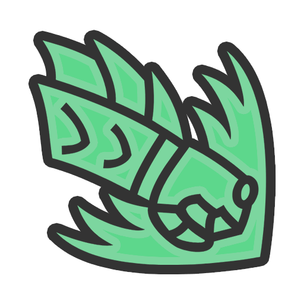
Triple Threat
Unleash a 3-punch combo. Each punch counts as an auto attack that deals 100 + 100% Attack + 50% Magic% damage (Max: 500%) and gives Reyna lasting Shields equal to 33% of the damage dealt.
The Champion
Gain 3 Attack per Rush triggered this game.
For Rush (8), Warriors gain 1 Crit and 1 Omnivamp per Rush triggered this game. Backup.
The Brawler
Gain the Vanguard class and 300 Max HP.
Triple Threat applies 33% more Shields.
Gain 1 Attack per 10 Shields, up to 0 + 50% MaxHealth Attack.
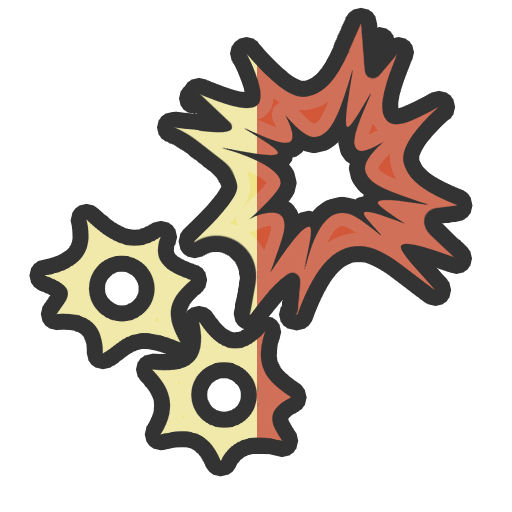
The Boxer
Gain the Duelist class and 20 Attack Speed.
Every 3 auto attacks, deal 50 + 225% Attack bonus damage and inflict 3 + AttackSpeed/5 Burn.
Current guild: Frontline brought her in as a trainer, and she's one of the best they've had: Junior breakers come out of her sessions looking like fighters. What drives her: a pitch for a sanctioned tournament for Awakened, opponents finally worth the trouble.
Motivation: Two honest questions. Will you train as hard as she does? And will your guild back her tournament when it's time? Yes and yes, and she's in.
In pools: AllHeroes, Warriors, Duelists and Warriors
Yuuna Hero_4
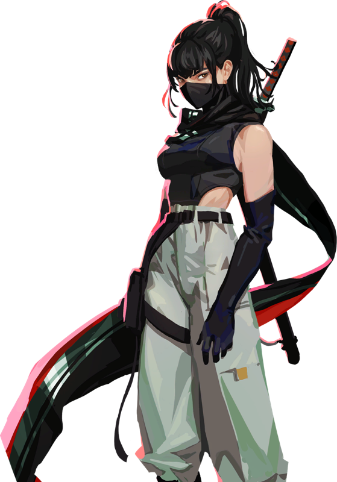
The Professional — “I will not let our guild down.”
HP 800 · Def 39 · Base Atk Dmg 40 · Attack 0 · Magic 0 · Atk Speed 0 (base 0.45/s) · Crit 50 · Range 1 · Mana 35/75 +4 · Move 1.5 · Melee
Guild: The Hunt · Class: Assassin · Tags: Crit · Gender: Feminine · Mana lock 0.5s
Abilities & specialization paths
Shuriken Shadow Strike
Leap into the air and throw 1 + Crit/40 shurikens at the lowest-health enemy for 150 + 150% Attack + 150% Magic damage each.
Max Shurikens: 10
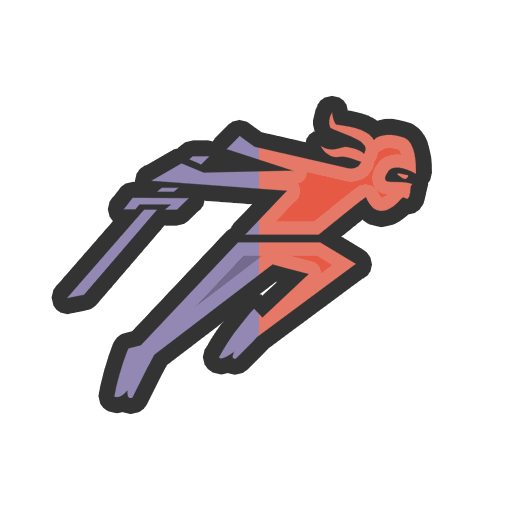
The Shadow
When Yuuna goes below 75% Max HP, she gains Stealth for 4 seconds. Triggers once per combat.
Whenever Yuuna gains Stealth, she gains 40 Mana and permanently gains 5 + 5% Rank Crit.
The Collector
Shuriken Shadow Strike fires an additional shuriken.
On kill, gain 1d5 Shards then permanently increase the Shards generated from this ability by 1. Triggers once per combat.
The Nightshade
Shuriken Shadow Strike gains +150% Crit against Poisoned enemies.
Whenever an Assassin Crits, they inflict 4 + 4% Rank Poison. Backup.
Current guild: She marks the dangerous targets, opens angles for everyone else, and takes her own mistakes personally. The Hunt values her reliability and has made peace with how little she reveals about herself.
Motivation: She needs a guild that holds itself to a certain standard, and a team worth the loyalty. One caveat: no one has seen her without the mask, and knows who she really is.
In pools: AllHeroes, Starting Heroes, Assassins, Assassins and Mages
Zuri Hero_5
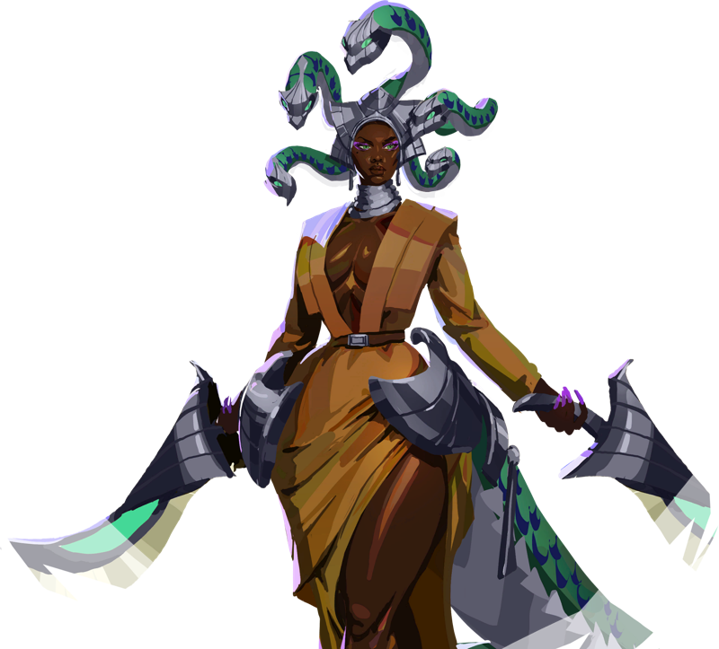
The Gorgon — “It's okay. You can take a peek.”
HP 900 · Def 52 · Base Atk Dmg 33 · Attack 0 · Magic 0 · Atk Speed 0 (base 0.38/s) · Crit 50 · Range 1 · Mana 75/100 +4 · Move 1.5 · Melee
Guild: L'Héritage · Class: Tank / Assassin · Tags: Crit · Gender: Feminine · Mana lock 0.5s
Abilities & specialization paths
Petrification
Petrify all enemies targeting Zuri, dealing 275 + 250% Magic damage, inflicting 2 Poison per Stone Skin trigger this game, and Stunning for 4 seconds.
Stone Skin
On Crit, permanently gain 1 Defense and 1 Magic. Triggers 2 + Crit/20 + Defense/60 times per combat.
The Cruel
Petrify all enemies targeting Zuri, dealing 275 + 250% Magic damage, inflicting 2 Poison per Stone Skin trigger this game, and Stunning for 4 seconds.
The Serpent's Kiss
When auto attacked, inflict 1 + Defense/60 + Magic/50 Poison on the attacker and gain 0 + 1% Rank HP/S.
The Bladedancer
For Rush (10), auto attacks deal 5 + 100% Crit + 50% Magic bonus damage and heal 5 + 100% Crit + 50% Magic.
After Stall (20), auto attacks deal 5 + 100% Crit + 50% Defense bonus damage and heal 5 + 100% Crit + 50% Defense.
Current guild: The old stories say you shouldn't look a gorgon in the eye. Zuri built a career on the opposite: everyone looks. Cameras, sponsors, monsters - her gaze stops them all where they stand, some more literally than others. L'Héritage trained her for both audiences, and she's never once blinked first.
Motivation: Convince her your guild won't be overlooked, and she's interested.
In pools: AllHeroes, Tanks, Assassins, Assassins and Mages, Tanks and Vanguards
Aria Hero_6
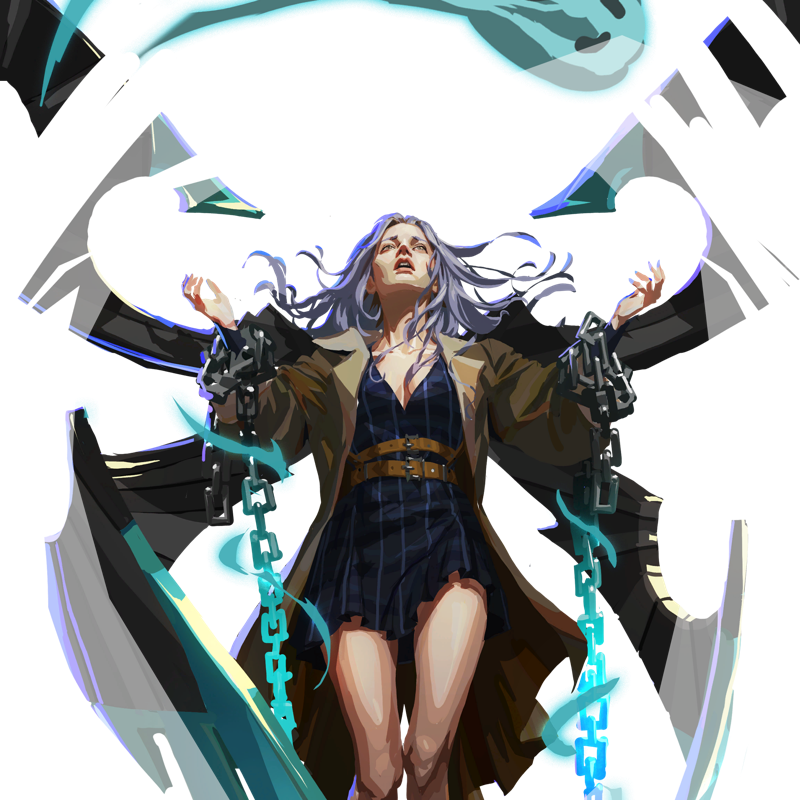
The Requiem — “I've brought them with me.”
HP 600 · Def 26 · Base Atk Dmg 23 · Attack 0 · Magic 25 · Atk Speed 0 (base 0.40/s) · Crit 15 · Range 4 · Mana 40/110 +4 · Move 1.5 · Ranged (proj. speed 5)
Guild: L'Héritage · Class: Mage · Tags: Frost, Burn · Gender: Feminine · Mana lock 1s
Abilities & specialization paths
Requiem Barrage
Channel an energy beam for 2.5 seconds.
Each half second, deal 25 + 75% Magic damage, inflict 0 + Magic/15 Frost, and inflict 0 + Magic/10 Burn to all enemies inside the beam.
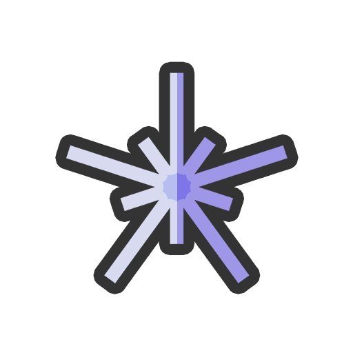
The Crescendo
On Stall trigger, permanently gain 3 Magic.
After Stall (20, 40, and 60), gain +50% Magic and increase the duration of Requiem Barrage by 1 second.
The Resplendent
Mages inflict 20 + 10% Rank% more Debuffs. Backup.
Aria inflicts an additional 50% more Debuffs.
The Harmony
Gain the Mystic class and 4 Mana Regen.
Requiem Barrage Shields Heroes for 10 + 33% Magic + 300% ManaRegen.
Current guild: A famous singer years before her Awakening. When her powers grew, her voice swelled, a choir rose with it. She still performs, and takes rift contracts between tours; letting her power loose in a rift is the one thing that quiets the choir.
Motivation: The voices grow restless between fights. She's looking for a guild that keeps them singing.
In pools: AllHeroes, Mages, Assassins and Mages
Nyx Hero_7
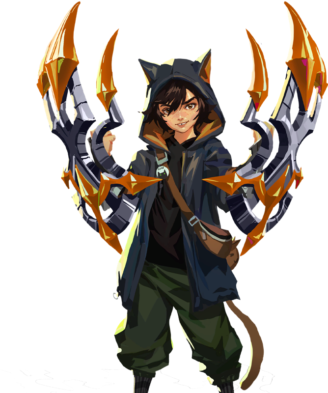
The Stray — “Yeah. I know I'm small. Get over it.”
HP 800 · Def 38 · Base Atk Dmg 38 · Attack 0 · Magic 0 · Atk Speed 20 (base 0.53/s) · Crit 15 · Range 1 · Mana 20/50 +4 · Move 1.5 · Melee
Guild: The Hunt · Class: Duelist · Tags: Rush · Gender: Neutral · Mana lock 0.5s
Abilities & specialization paths
Ferality
For Rush (5), gain 5 + 25% AttackSpeed Attack Speed and 5 + 25% Attack Attack for each time this ability has triggered this combat.
Every 12 auto attacks, refresh all of Nyx's Rush abilities.
The Keen-Eyed
Gain the Assassin class and 30 Crit.
Assassins and Duelists instantly kill any enemies they damage below 20 + 5% Rank% Max HP. Backup.
The Wild
Perform a 5-hit combo. Each hit counts as an auto attack that deals 100 + 50% AttackSpeed + 33% Magic + 33% Attack% damage. If the enemy dies during the combo, Nyx jumps to the nearest enemy and re-casts this ability.
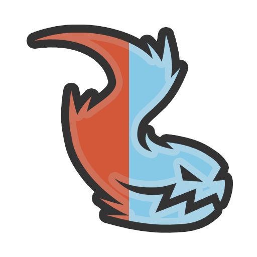
The Spark
After Stall (10), each auto attack inflicts 1 + AttackSpeed/50 Burn.
After Stall (20), each auto attack inflicts 1 + AttackSpeed/75 Frost.
After Stall (30), each auto attack inflicts 1 + AttackSpeed/100 Poison.
Current guild: Nyx slipped past three rift lockdowns before The Hunt gave up chasing the kid and signed them instead. Now the youngest breaker on any roster: too quick to catch, too vicious to ignore. Nyx has no family on file, no address, no home. They don't trust The Hunt enough to sleep at their guild house. But every time there's a fight, the kid is always already there.
Motivation: Nyx doesn't follow guilds but people worth trusting - and hasn't found one yet. Be the first, and the kid stops being a stray.
In pools: AllHeroes, RangedHeroes, Duelists, Duelists and Warriors
Pollen Hero_8
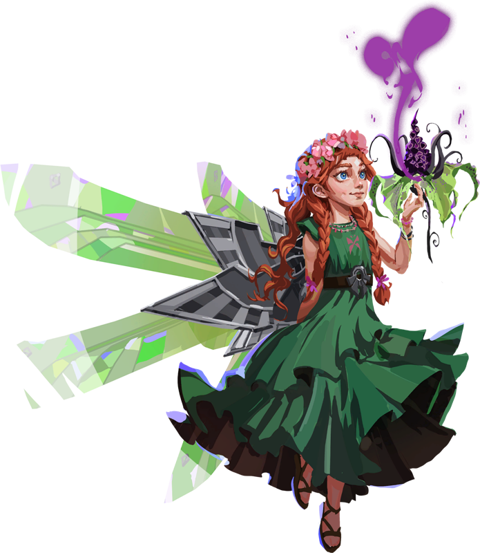
The Bloom — “Ohh.. can you smell that? This rift is alive.”
HP 575 · Def 30 · Base Atk Dmg 20 · Attack 0 · Magic 0 · Atk Speed 0 (base 0.42/s) · Crit 15 · Range 4 · Mana 35/135 +8 · Move 1.5 · Ranged (proj. speed 4)
Guild: Gaia Project · Class: Mystic · Tags: Poison, Shields, Stall · Gender: Feminine · Mana lock 1s
Abilities & specialization paths
Sanctuary of Bloom
Create a flower field for 5 seconds.
Each second, inflict 1 + ManaRegen/5 Poison on enemies and apply 10 + 100% Magic Shields to Heroes inside the flower field.
Each second after Stall (15), heal Heroes inside the flower field for 10 + 50% Magic.
The Bloomer
After Stall (15), Double Sanctuary of Bloom's healing and Shielding. It lasts 1 second longer.
The Fae's Kiss
After Stall (10), Sanctuary of Bloom inflicts 100% more Poison.
After Stall (30), increase the amount of Debuffs on all enemies by 33 + 33% Rank%. Backup.
The Earth's Child
Gain the Mage class and 30 Magic.
After Stall (20), Sanctuary of Bloom also inflicts 0 + Magic/33 Frost and 0 + Magic/25 Burn each second.
Current guild: Nobody at Gaia is entirely sure where she came from. She turned up at their second meeting and never left, because her strange ideas about rifts kept turning out to be right. Her senses run stronger than anyone's: colors carry meaning, music has flavor, and a rift sings to her in a structure only she can hear. Gaia treats her as something between a daughter and a researcher.
Motivation: She'll never fully leave Gaia, but she's drawn to a guild that takes on plenty of contracts. Just know she may wander off mid-contract.
Niklas Hero_9
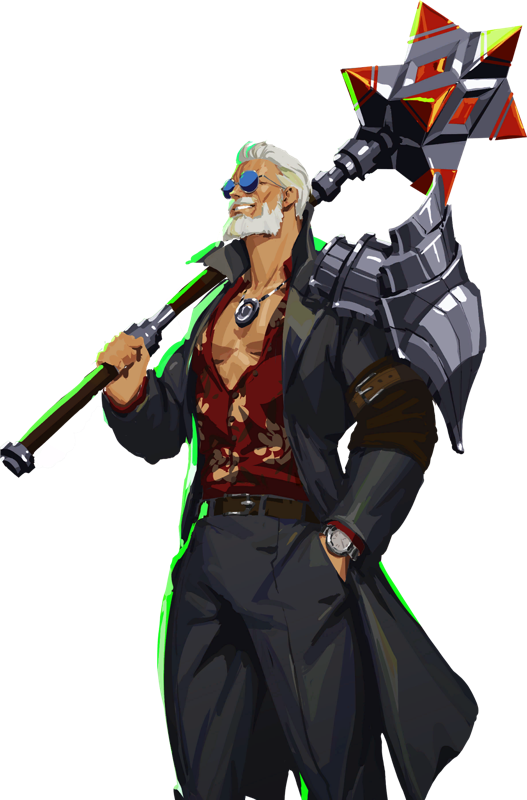
The Dealer — “Looks like you know a deal when you see one.”
HP 1150 · Def 44 · Base Atk Dmg 40 · Attack 0 · Magic 0 · Atk Speed 0 (base 0.40/s) · Crit 15 · Range 1 · Mana 45/90 +4 · Move 1.5 · Melee
Guild: Aegis Global · Class: Vanguard · Tags: Shards, Burn, Rush · Gender: Masculine · Mana lock 0.5s
Abilities & specialization paths
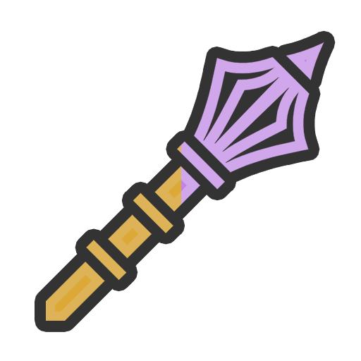
Wheel and Deal
Swing a mace to deal 225 + 25% MaxHealth + 200% Attack + 150% Magic damage and Stun for 3 seconds.
Every 4 casts, create a random item.
Red Hot Deals
Niklas has an extra item slot. When he survives combat, consume the item in his leftmost item slot to permanently gain 50 + 25% Rank% of its stats and Shards equal to 80% of its value.
For Rush (14), auto attacks inflict 1 + MaxHealth/500 Burn per equipped item.
The Dealer
Swing a mace to deal 225 + 25% MaxHealth + 200% Attack + 150% Magic damage and Stun for 3 seconds.
Every 4 casts, create a random item.
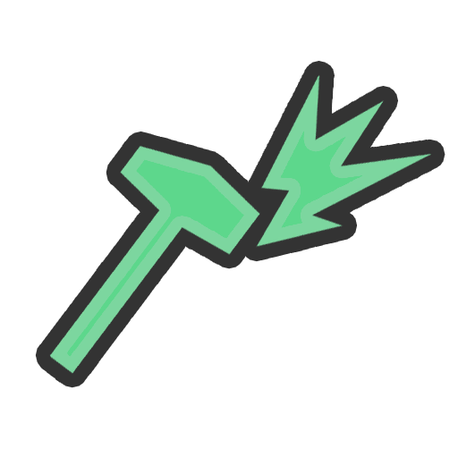
The Executive
Gain an item slot.
For Rush (15), gain 0 + 33% MaxHealth Shields per equipped item.
The Hoarder
Gain the Tank class and 30 Defense.
For Rush (20), whenever a Vanguard or Tank is auto attacked they deal 1 damage to the attacker per Shard generated this game. Backup.
Current guild: He's who Aegis sends when something has to move quietly: officially an acquisitions lead, unofficially their smuggler-in-chief. Self-made, and long decided that fairness is a luxury for people who can afford to lose. Nothing leaves a rift in his presence without a cut for him.
Motivation: Aegis pays well, but it watches everything and owns everything he touches. A new guild is an open market: fewer eyes, a bigger margin, first pick of whatever comes out of a rift before it's logged. He's switching if he believes you're the better deal.
In pools: AllHeroes, Starting Heroes, Vanguards, Tanks and Vanguards
Fiona Hero_10
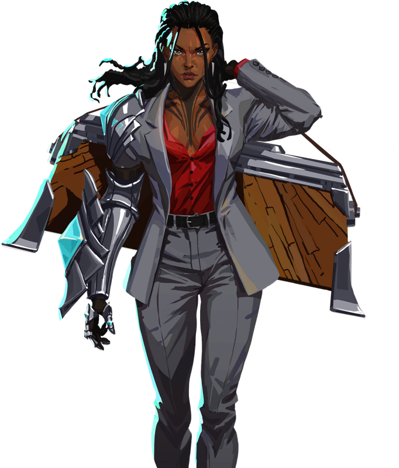
The Maker — “I've got all we need here with me.”
HP 750 · Def 31 · Base Atk Dmg 25 · Attack 0 · Magic 0 · Atk Speed 0 (base 0.39/s) · Crit 15 · Range 3 · Mana 25/100 +8 · Move 1.5 · Ranged (proj. speed 5)
Guild: Aegis Global · Class: Mystic · Tags: Shields · Gender: Feminine · Mana lock 0.75s
Abilities & specialization paths
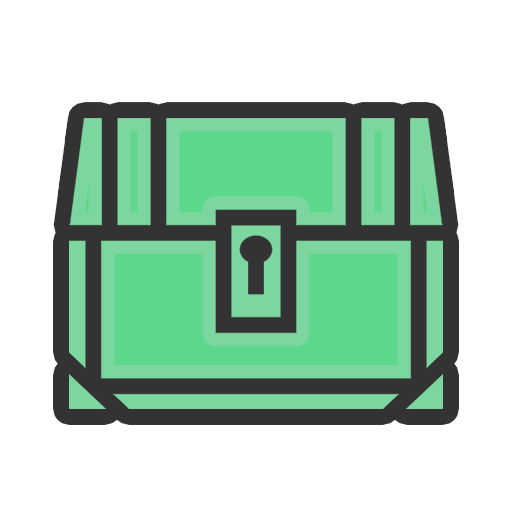
Vault Spark
Spark a protective vault. Apply 250 + 250% Magic Shields to the 1 + ManaRegen/12 lowest current % Max HP Heroes.
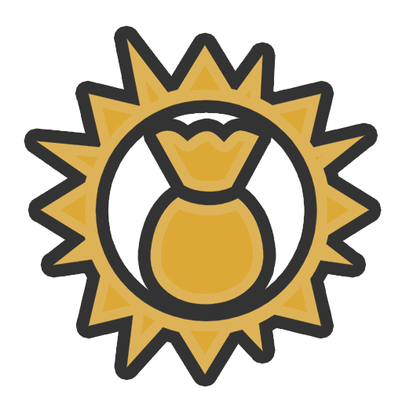
The Right Hand
Every 5 casts, create a random item and gain 2 + 2% Rank Shards.
The Lustrous
Gain the Vanguard class and 200 Max HP.
On cast, gain 0 + 33% MaxHealth Shields.
Whenever an enemy damages a Shielded Hero, inflict 1 + 1% Rank Burn on that enemy. Backup.
The Tycoon
Every 5 casts, gain a Tycoon stack.
At start of combat, Heroes gain 75 + ManaRegen/1×4 Max HP per Tycoon stack. Backup.
Current guild: She fixed toasters and bicycles at a neighborhood repair café before her Awakening gave her the rare gift of fusing artifacts inside a rift, fusing gear like no other breaker can. She's Niklas's right hand across Aegis's supply chain: he acquires, she combines. No one's figured out how artifacts actually work, but her goal is to build them from scratch.
Motivation: A guild with the resources to keep her workshop stocked and the sense not to disturb her while she works.
Rowan Hero_11
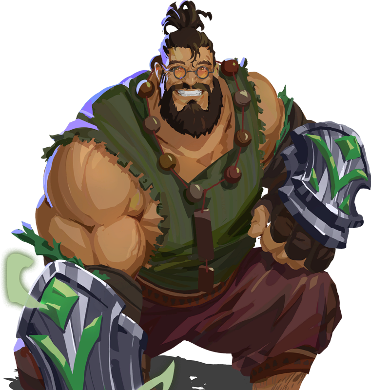
The Anchor — “You're safe with me.”
HP 1000 · Def 54 · Base Atk Dmg 31 · Attack 0 · Magic 0 · Atk Speed 0 (base 0.35/s) · Crit 15 · Range 1 · Mana 60/115 +4 · Move 1.5 · Melee
Guild: Gaia Project · Class: Vanguard / Tank · Tags: Stall · Gender: Masculine · Mana lock 1s
Abilities & specialization paths
Fault Line
Gain 0 + 25% MaxHealth Shields, then deal 50 + 25% MaxHealth + 200% Defense + 100% Magic damage and Stun enemies in front of Rowan for 4 seconds.
Hearty
After Stall (10), gain 2 + MaxHealth/100 + Defense/15 HP/S.
The Tectonic
Gain 0 + 25% MaxHealth Shields, then deal 50 + 25% MaxHealth + 200% Defense + 100% Magic damage and Stun enemies in front of Rowan for 4 seconds.
The Protector
On auto attack, gain 0 + 3% MaxHealth Shields, then deal bonus damage equal to 75 + 25% Rank% of current Shields (Max Damage: 0 + 1000% MaxHealth.
The Friend
On Stall trigger, permanently gain 20 Max HP and 5 Defense. Backup.
Backup Only: At start of combat, Tanks and Vanguards gain all Defense and Max HP gained from this ability.
Current guild: He's the wall the rest of the team forms up behind. Rowan spent six years mining crystals out of rifts for a mining company. The more crystals they took, the more the rifts started acting strange. He couldn't prove mining was the cause, but he believed it. Gaia was the first to say out loud what his gut already knew: take less, listen more.
Motivation: Nobody ever truly leaves the Gaia community behind, but Rowan would join any guild that has a chance to end the crisis and cares about consequences. He'll know within a day whether yours does.
In pools: AllHeroes, Starting Heroes, Tanks, Vanguards, Tanks and Vanguards
Skorn Hero_12
The Bulwark — “Let them try. I'll take it gladly.”
HP 950 · Def 60 · Base Atk Dmg 30 · Attack 0 · Magic 0 · Atk Speed 0 (base 0.38/s) · Crit 15 · Range 1 · Mana 30/105 +4 · Move 1.5 · Melee
Guild: A Temple · Class: Tank · Tags: Poison, Stall · Gender: Masculine · Mana lock 1s
Abilities & specialization paths
Come At Me!
Taunt all enemies. Gain 100 + 100% Rank Shields plus 10 + 10% Defense + 10% Magic Shields per Stall triggered this game. After 5 seconds, deal damage to all enemies targeting Skorn equal to 50% of his remaining Shields.
Retribution
When auto attacked after Stall (10), deal 2 + 100% Magic damage and inflict 1 + Defense/50 Poison on the attacker.
The Haughty
Taunt all enemies. Gain 100 + 100% Rank Shields plus 10 + 10% Defense + 10% Magic Shields per Stall triggered this game. After 5 seconds, deal damage to all enemies targeting Skorn equal to 50% of his remaining Shields.
The Winter's Bite
Whenever Skorn inflicts Poison, he inflicts an equal amount of Frost.
Whenever Skorn inflicts Frost, he gains 0 + 10% Rank Shields.
The Bristleguard
At start of combat, for each Tank in combat inflict 10 + 10% Rank Poison on all enemies and give 10 + 10% Rank Defense to all Heroes. Backup.
Current guild: An eye for an eye - except Skorn takes two; Hit him and get hit back. He's built his whole fighting style around one insane conviction: nothing in any rift can take more pain than he can. So far, nothing has. Every scar is a fight where the monster blinked first.
Motivation: He gets bored in guilds that fight carefully. Promise him the front of every fight, and the ugliest opponents you can find, and he's in.
In pools: AllHeroes, RangedHeroes, Starting Heroes, Tanks, Tanks and Vanguards
Logan Hero_13
The Executioner — “I don't fight for sport. I fight to end this.”
HP 825 · Def 40 · Base Atk Dmg 50 · Attack 25 · Magic 0 · Atk Speed 0 (base 0.40/s) · Crit 15 · Range 1 · Mana 30/80 +4 · Move 1.5 · Melee
Guild: Frontline · Class: Warrior · Tags: · Gender: Masculine · Mana lock 0.5s
Abilities & specialization paths
Execution
Swing a crushing axe to deal 150 + 100|200|400|600% Attack + 200% Magic damage. Logan gains power by dealing damage with this ability.
The Iron
Gain an item slot.
For Rush (12), Warriors gain 0 + 2% Rank Attack and 0 + 2% Rank Defense per Rush trigger this game. Backup.
The Juggernaut
Whenever Logan deals damage with Execution, he gains lasting Shields equal to 75 + 50% Rank% of the damage dealt.
The Momentous
On kill, gain 40 Mana and permanently gain 15 Attack and 5 Crit.
Current guild: Logan survived a rift that got all members of his previous team killed. Since then he fights with one goal: end every fight as fast as possible. No showing off, no wasted moves, no casualties. Frontline loves marketing its stars - Logan gives them nothing to work with, and doesn't care.
Motivation: He believes the big guilds gain too much from the Rift crisis to ever end it. Prove your guild actually wants to finish it, and he's all in.
In pools: AllHeroes, Starting Heroes, Warriors, Duelists and Warriors
Funke Hero_14
The Shackled — “Let me do things my way.”
HP 650 · Def 27 · Base Atk Dmg 21 · Attack 0 · Magic 25 · Atk Speed 0 (base 0.47/s) · Crit 15 · Range 4 · Mana 45/85 +4 · Move 1.5 · Ranged (proj. speed 6)
Guild: A Temple · Class: Mage · Tags: Burn · Gender: Masculine · Mana lock 1s
Abilities & specialization paths
Wildfire
Blast a fireball at all enemies in Funke's range, dealing 175 + 200% Magic damage and inflicting 0 + 75% Magic Burn.
The Stoked
Mages gain 1 + 1% Rank Magic whenever an enemy in their range takes Burn damage. Backup.
Funke gains 1 Mana whenever an enemy in his range takes Burn damage.
The Inferno
Gain 2 Attack Range.
At start of combat and after Stall (15), inflict 25 + Magic/3 Burn on all enemies in range.
The Detonator
On cast, all enemies in range take 7 + 7% Rank ticks of Burn damage.
Current guild: Funke's flames were never meant to be carried inside one body. He ended raids alone and took half the site with him. The incident reports stopped distinguishing between "victory" and "collateral" years ago. A Temple is the only guild that can work with him at all, and even that takes everything he has to hold back. Sometimes he goes quiet mid-thought, like he's listening to something else.
Motivation: Every guild so far has wanted him smaller, contained. Be the first to ask what happens when he stops holding back, and he'll show you personally.
In pools: AllHeroes, Mages, Assassins and Mages
Tilly Hero_15
The Heiress — “Oh.. I might actually be brilliant at this.”
HP 750 · Def 34 · Base Atk Dmg 38 · Attack 25 · Magic 0 · Atk Speed 20 (base 0.50/s) · Crit 15 · Range 2 · Mana 25/75 +4 · Move 1.5 · Melee
Guild: L'Héritage · Class: Warrior / Duelist · Tags: Shards · Gender: Feminine · Mana lock 1s
Abilities & specialization paths
Luxurious
Gain 0 + 25% Attack Attack Speed and 0 + 25% AttackSpeed Attack.
Every 25 auto attacks, gain 2 + 2% Rank Shards.
The Stylish
Gain an item slot.
On auto attack, deal bonus damage per Shard generated this game.
The Sharp
For Rush (10), Warriors gain 8 + 8% Rank% Attack and 4 + 4% Rank% Crit. Backup.
After Stall (20), Duelists gain 8 + 8% Rank% Attack Speed and 4 + 4% Rank% Crit. Backup.
The Elegant
Gain 4 + 4% Rank Crit and 4 + 4% Rank Omnivamp, then deal 75 + 150% Attack + 150% AttackSpeed + 150% Magic damage to all enemies in Tilly's range.
Current guild: Tilly looks like the sweetest thing L'Héritage ever put in front of a camera - right up until the flails start spinning. What follows is fast, heavy, and disturbingly cheerful. L'Héritage adores the contrast on camera. Off camera, even her coaches keep a respectful distance.
Motivation: She's not interested in being L'Héritage's new shiny thing. Her idea of beauty is a monster coming apart mid-swing. A guild with the bloodiest contracts is a guild she'll love.
In pools: AllHeroes, Starting Heroes, Warriors, Duelists, Duelists and Warriors
Gustav Hero_16
The Analyst — “I've been wanting to test a scenario like this.”
HP 700 · Def 30 · Base Atk Dmg 22 · Attack 0 · Magic 0 · Atk Speed 0 (base 0.36/s) · Crit 15 · Range 3 · Mana 45/150 +8 · Move 1.5 · Ranged (proj. speed 4)
Guild: Aegis Global · Class: Mystic · Tags: Frost, Shields · Gender: Masculine · Mana lock 1s
Abilities & specialization paths
Blizzard
Create a Blizzard for 5 seconds.
Each second, inflict 2 + ManaRegen/8 Frost and deal 15 + 50% Magic damage to enemies inside the Blizzard. Shield Heroes inside it for 10 + 75% Magic.
The Investor
At start of combat, spend 4 Shards to give Gustav an Investment. Give all Heroes 2 Mana Regen per Investment. Backup.
Every 5 Investments, gain 30 Shards.
The Glacier
Gain the Tank class, 40 Defense, and -1 Attack Range.
Blizzard applies 0 + 75% Defense more Shields and always targets Gustav.
After Stall (25 and 50), permanently gain 2 + 2% Rank Defense.
The Avalanche
On cast, gain 1 Shard.
On Shards generated, gain 1 Mana Regen and 5 Magic.
Current guild: He came up through academia, with three published papers before he turned twenty one, and Aegis hired him straight out of his post-doc. He runs the numbers behind crystal refining, making each batch yield more usable energy than the last, and his models are why Aegis's supply chain has stayed a step ahead of every competitor for six straight quarters.
Motivation: He wants a new challenge. Yours presents an interesting scenario. He'd like to see how it plays out.
In pools: AllHeroes, RangedHeroes, Mystics
Ratna Hero_17
The Matriarch — “Are you sure your guild can afford me?”
HP 575 · Def 27 · Base Atk Dmg 20 · Attack 0 · Magic 25 · Atk Speed 0 (base 0.43/s) · Crit 15 · Range 4 · Mana 30/80 +4 · Move 1.5 · Ranged (proj. speed 6)
Guild: L'Héritage · Class: Mage · Tags: Crit · Gender: Feminine · Mana lock 0.75s
Abilities & specialization paths
Starfall
Conjure celestial magic to deal 190 + 150|250|450|750% Magic damage.
On kill, permanently gain 10 + 10% Rank Magic.
On Crit, Stun all enemies for .5+.5% Rank seconds.
The Fashionable
Gain an item slot.
At start of combat, gain 45 Magic, 3 Mana Regen, and 6 HP/S per rarity level of each equipped item.
The Ostentatious
Gain the Mystic class and 4 Mana Regen.
On cast, other Heroes gain 0 + 25% Magic Magic and 0 + 25% ManaRegen Mana Regen.
Backup Only: At start of combat, Mages and Mystics gain 0 + 25% Magic Magic and 0 + 25% ManaRegen Mana Regen.
The Magnanimous
Gain the Assassin class and 25 Crit.
Starfall also hits the lowest health enemy the first 2 + 1% Rank times it is cast each combat.
On kill, gain Stealth for 4 seconds and permanently gain 3 + 2% Rank Crit.
Current guild: Ratna works in public relations for L'Héritage, smoothing over disasters and getting government support and favorable extraction rights signed. The chairman takes her calls when he won't take anyone else's. She works a rift the same way she works a room: watching who's in it, who's worth knowing, what it needs from her next.
Motivation: You don't recruit Ratna. You earn her attention, and then she lends your guild her influence.
In pools: AllHeroes, RangedHeroes, Starting Heroes, Mages, Assassins and Mages
Rip Hero_18
The Butcher — “Woof woof, no need to be scared. I don't bite.”
HP 1250 · Def 42 · Base Atk Dmg 41 · Attack 0 · Magic 0 · Atk Speed 0 (base 0.42/s) · Crit 15 · Range 1 · Mana 25/75 +4 · Move 1.5 · Melee
Guild: A Temple · Class: Vanguard · Tags: Rush · Gender: Masculine · Mana lock 0.5s
Abilities & specialization paths
Bloodthirsty
For Rush (10), gain 0 + 5% MaxHealth Attack.
Whenever Rip or an enemy adjacent to him first drops below 50% Max HP, refresh all of his Rush abilities and gain 0 + 2% MaxHealth Attack Speed.
The Glutton
On Rush trigger, permanently gain 33 Max HP. Backup.
Backup Only: At start of combat, Vanguards gain all Max HP gained from this ability.
The Enraged
Enter a rage, gaining 0 + 10% MaxHealth + 250% Magic Max HP, 5 + 5% Rank Attack Speed, and 2 + 2% Rank Omnivamp. This ability stacks.
The Brute
Gain the Assassin class and 35 Crit.
On Crit, steal 0 + 50% Crit Health from the target.
Current guild: He's a frontliner with a reputation for tearing the heart out of whatever he kills, a habit left over from his old job on a cleanup crew hauling monster carcasses. He Awakened mid-shift; A Temple was the only guild that showed up to recruit him. Behind the mask he's entirely sane. Most teammates need time to work that out.
Motivation: Point him towards fresh meat and he'll join your slaughterhouse gladly. Your recruiter gets about thirty seconds to do so.
In pools: AllHeroes, Vanguards, Tanks and Vanguards
Karsu Hero_20
The Finisher — “I'm not here to talk.”
HP 650 · Def 29 · Base Atk Dmg 33 · Attack 0 · Magic 0 · Atk Speed 20 (base 0.53/s) · Crit 15 · Range 5 · Mana 45/85 +4 · Move 1.5 · Ranged (proj. speed 5)
Guild: A Temple · Class: Duelist · Tags: Frost · Gender: Feminine · Mana lock 1s
Abilities & specialization paths
Snowpiercer
Loose a volley of 5 + AttackSpeed/50 arrows at nearby enemies. Each arrow deals 25 + 100% Attack + 100% Magic damage and inflicts 3 + 2% Rank Frost.
Max Arrows: 14
The Falling Snow
On auto attack, reduce Karsu's Max Mana by 1 (Min: 40).
After Stall (15), Snowpiercer arrows gain 33 + 33% Rank Crit.
The Warband
On cast, permanently gain 2 Crit, 3 Attack, and 4 Attack Speed.
At start of combat, other Duelists gain all stats gained from this ability. Backup.
The Frostbite
Gain the Warrior class and 40 Attack.
On auto attack, fire an additional arrow that inflicts 1 + AttackSpeed/100 Frost and deals 1 + 10% Attack% of normal auto attack damage.
Current guild: She's a frost duelist: patient, exact, and the one who actually finishes the fights everyone else in the punk guild loves starting. She came over from Aegis Global, Dragomir's department officially, and whatever she walked away with isn't on any record. A Temple offered her a contract on the spot.
Motivation: She doesn't think the big, official guilds will ever end this crisis. If your guild does things differently, she'll listen.
In pools: AllHeroes, RangedHeroes, Starting Heroes, Duelists, Duelists and Warriors
Ming Hero_21
The Drifter — “So this is where the world sends me next.”
HP 1100 · Def 41 · Base Atk Dmg 37 · Attack 0 · Magic 0 · Atk Speed 0 (base 0.35/s) · Crit 15 · Range 1 · Mana 30/70 +4 · Move 1.5 · Melee
Guild: The Hunt · Class: Vanguard · Tags: Burn, Rush · Gender: Masculine · Mana lock 1s
Abilities & specialization paths
Inner Flame
Each second, inflict 0 + MaxHealth/600 Burn on adjacent enemies.
For Rush (7), double the Burn.
The Searing
Channel flames to deal 100 + 25% MaxHealth + 100% Magic damage, inflict 7 Burn per Rush triggered this game, and Stun all surrounding enemies for 3 seconds.
The Tempered
For Rush (15), Vanguards gain 20 + 30% Rank% Max HP. Backup.
The Enlightened
Increase the duration of Rush abilities by 0 + 2% Rank seconds.
For Rush (1), Ming is immune to damage.
Current guild: He's a frontliner with a particular kind of fire: solid, dependable, quiet in the briefing. Ming owns what fits in one bag and has never needed more. Guilds kept offering him a career path; he kept politely losing the paperwork. The Hunt is lenient enough to keep him on anyway - knowing full well that one morning, his bag will be gone.
Motivation: Ming lives in the moment, and it takes something real to grab his attention. There's something in how you lead that he can't quite let drift past.
In pools: AllHeroes, Vanguards, Tanks and Vanguards
Pimenta Hero_22
The Rose Knight — “If they want you, they'll have to go through me.”
HP 950 · Def 58 · Base Atk Dmg 33 · Attack 0 · Magic 0 · Atk Speed 0 (base 0.42/s) · Crit 15 · Range 1 · Mana 35/90 +4 · Move 1.5 · Melee
Guild: Gaia Project · Class: Tank · Tags: Poison, Stall · Gender: Feminine · Mana lock 0.5s
Abilities & specialization paths
Pepper Spray
Create a poison cloud around Pimenta for 4 seconds.
Each second, deal 5 + 75% Magic + 50% Defense damage and inflict 2 + Defense/20 Poison to enemies in the poison cloud.
Each second after Stall (15), gain 2 + 2% Rank HP/S per enemy in the poison cloud.
The Spicy
Gain the Duelist class and 20 Attack Speed.
On auto attack, for each type of Debuff on the target inflict 2 + 1% Rank more of that Debuff and deal 10 + 75% AttackSpeed bonus damage.
The Seasoned
Gain the Mage class and 25 Magic.
Pepper Spray expands in size and lasts 1 second longer.
After Stall (15), Tanks and Mages gain 20 + 20% Rank Defense. Backup.
The Lover
At start of combat, Heroes directly behind Pimenta permanently gain 15 Attack Speed. Sal gains 15 more.
Current guild: She's the guardian who plants herself in front of her people to protect them. The poison spreads from her, buying everyone the time they need. She met Sal on the Gaia forum, trading notes, and after six months of bickering they noticed they were writing love letters. Their shared goal, once the crisis ends: a cottage with a rose garden.
Motivation: She and Sal want one thing answered: does your guild have a real chance of ending this? Gaia takes fewer contracts than the big names, and at this rate the cottage stays a long way off. Gaia is family, so they'll never fully leave. But move the clock forward, and they're with you.
In pools: AllHeroes, Tanks, Tanks and Vanguards
Sal Hero_23
The Keeper — “See? We're still here.”
HP 725 · Def 34 · Base Atk Dmg 30 · Attack 0 · Magic 25 · Atk Speed 0 (base 0.42/s) · Crit 15 · Range 2 · Mana 50/100 +4 · Move 1.5 · Ranged (proj. speed 6)
Guild: Gaia Project · Class: Mage · Tags: Frost · Gender: Feminine · Mana lock 1s
Abilities & specialization paths
Permafrost
Sal empowers her attacks, causing them to also hit the nearest enemy to Sal's target, dealing 10 + 50% Magic bonus damage and inflicting 1 + 1% Rank Frost. This ability stacks.
The Breezy
Gain the Duelist class, 20 Attack Speed, and 1 Attack Range.
Whenever a Mage or Duelist inflicts a Debuff, they gain 0 + 1% Rank Attack Speed and 0 + 1% Rank Magic. Backup.
The Lover
At start of combat, Heroes directly in front of Sal permanently gain 20 Defense. Pimenta gains 20 more.
The Brisk
Gain the Warrior class and 50 Attack.
Bonus damage from Permafrost can Crit.
On Crit, inflict 1 + 1% Rank Frost.
On cast, Sal gains 0 + 33% Attack + 33% Magic Crit.
Current guild: She has always been keeping small things since she was a child: pressed flowers, faded photographs, small acts of preservation. Her Awakening carries the same instinct: frost that can shatter but also preserve, depending what's needed. It's the same frost that slows the poison in Pimenta's veins.
Motivation: She goes where Pimenta goes. Bring the day closer when none of this is needed anymore, and she'll work twice as hard to get there.
In pools: AllHeroes, Mages, Assassins and Mages
Dragomir Hero_24
The Executive — “You'll want me here. Trust me.”
HP 800 · Def 40 · Base Atk Dmg 35 · Attack 0 · Magic 0 · Atk Speed 0 (base 0.45/s) · Crit 50 · Range 1 · Mana 35/75 +4 · Move 1.5 · Melee
Guild: Aegis Global · Class: Assassin · Tags: Shards, Crit, Omnivamp · Gender: Masculine · Mana lock 0.5s
Abilities & specialization paths
Devour
Gain 1 + 10% Crit Omnivamp, then deal 250 + 250% Magic + 1000% Omnivamp damage.
On kill, gain 2 + 2% Rank Shards.
The Greedy
Devour generates 2 + 1% Rank more Shards on kill.
On cast, consume 2 Shards to permanently gain 1 + 1% Rank Omnivamp and 1 + 1% Rank Crit.
The Sanguine
Gain the Mage class and 25 Magic.
On cast, gain 0 + 5% Rank Omnivamp and teleport behind the lowest health enemy.
On Devour kill, gain 60 Mana and Stealth for 4 seconds.
The Kingpin
Gain the Vanguard class and 200 Max HP.
For Rush (8), Assassins and Vanguards gain 1 Omnivamp and 1 Crit per Shard generated this game. Backup.
Current guild: Dragomir's Awakening nearly killed him. Look closely and you could argue it partly did. Yet every year since, he's looked a little more vibrant, a little more alive; his doctors stopped trying to offer explanations long ago. He's well-spoken, with an old-world courtesy that puts people at ease and keeps anyone from investigating his condition too closely.
Motivation: Aegis is starting to ask questions. A new guild means new faces and answers he won't have to give for years.
In pools: AllHeroes, Assassins, Assassins and Mages
Kai Hero_26
The Shotcaller — “Don't have all the fun without me.”
HP 875 · Def 41 · Base Atk Dmg 46 · Attack 25 · Magic 0 · Atk Speed 0 (base 0.39/s) · Crit 15 · Range 1 · Mana 50/105 +4 · Move 1.5 · Melee
Guild: The Hunt · Class: Warrior · Tags: Shields · Gender: Masculine · Mana lock 1s
Abilities & specialization paths
Resolute Strike
Charge up a mighty attack, gaining 300 + 400% Attack + 250% Magic Shields. After 2 seconds, deal 100 + 150% Attack damage plus bonus damage equal to Kai's remaining Shields to surrounding enemies.
The Unstoppable
Gain 60 + 25% Attack% more Shields from all sources.
Whenever Kai gains Shields, he also gains 9 + 6% Rank Attack.
The Bold
Gain the Tank class and 30 Defense.
Resolute Strike hits 1 second faster and affects a larger area.
On cast after Stall (15), gain 100 + 400% Defense lasting Shields.
The Intrepid
On Crit for Rush (6), permanently gain 1 + 1% Rank Attack and 100 + 200% Attack lasting Shields.
Whenever a Warrior Crits reduce their target's Defense by 2 + 1% Rank. Backup.
Current guild: One of the guild's shotcallers. He leads on charm more than rank, and keeps the team together when a fight turns. He made his name soloing a guardian before his squad could catch up, and he's been pushing past what the playbook recommends ever since.
Motivation: The Hunt does steady work, and steady bores him. Yours looks like the one that won't play it safe.
In pools: AllHeroes, Warriors, Duelists and Warriors
Grace Hero_27
The Saint — “Me? Really? I.. I'll try my best.”
HP 575 · Def 25 · Base Atk Dmg 20 · Attack 0 · Magic 0 · Atk Speed 0 (base 0.38/s) · Crit 15 · Range 4 · Mana 50/110 +8 · Move 1.5 · Ranged (proj. speed 4)
Guild: Frontline · Class: Mystic · Tags: Shields, Stall · Gender: Feminine · Mana lock 1s
Abilities & specialization paths
Salvation
Bless the lowest % Max HP Hero, applying 125 + 150|300|600|900% Magic Shields for 6 + 25% ManaRegen seconds and healing them for half that amount.
After Stall (20), this ability can target and resurrect dead Heroes.
The Selfless
After Stall (10), Salvation targets all Heroes.
Backup Only: After Stall (20 and Stall 40), apply 200 + 200% Rank Shields to all Heroes and heal them for half that amount.
The Benevolent
On cast after Stall (15), permanently give the target primary stats for each of their classes. This ability only triggers 1 + 1% Rank times per combat.
The Radiant
Whenever a Mystic Shields a Hero, give that Hero 4 + 4% Rank Attack and Magic. Backup.
Current guild: The bookish one in a family of athletes, Grace never expected to end up in a rift. Then her awakened powers turned up a rare healing affinity, and the Department of Guild Affairs fielded her before she'd decided if she wanted it. Frightened before every fight, frightened after every one, and back again for the next anyway. It's exactly the story Frontline's self-improvement campaigns are built to tell.
Motivation: Give her the confidence she's missing. Believe in her, and she becomes the backbone of your team.